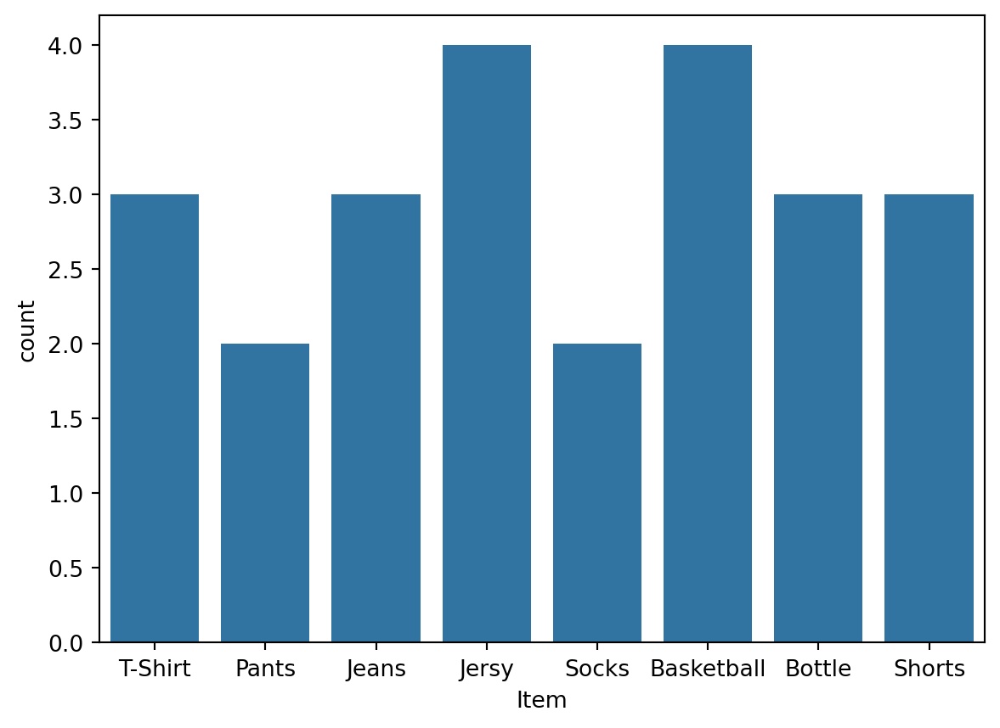

import pandas as pd
import numpy as np關聯式分析 Association Rules
關聯式分析簡介
關聯式分析（Association Rule Mining）是一種資料挖掘技術，旨在從大型資料集中找出項目之間的有趣模式或關聯規則。它主要應用於交易數據中，例如市場籃分析，幫助零售商識別哪些產品常一起購買，進而優化銷售策略。
關聯式規則的基本概念
- 項目集：一組項目，通常是一個交易中的購買品項。例如：{麵包, 牛奶}
- Support（支持度）
- 衡量一個項目集在整個資料集中出現的頻率，描述某個項目集（如 ）在所有交易中同時出現的比例。令 為交易總數，則
- 支持度的主要作用是用來篩選頻繁項目集，即那些在交易中出現次數足夠多的項目集。較低的支持度可能意味著這個規則在資料集中並不具代表性。通常在應用 Apriori 演算法時會設置一個最小支持度閾值，只有超過這個閾值的項目集才會被保留作為頻繁項目集，從而提高演算法的效率。
- Confidence（信賴度）
- 描述當項目集 出現時，項目集 出現的機率，表示規則 的可靠性，能夠反映在 出現的情況下， 出現的可能性有多高。
- 常用來篩選有效關聯規則。較高的信賴度表示當項目集 出現時，項目集 很有可能也會出現，因此這個規則可能具有較強的預測能力。然而，信賴度有時可能誤導人們對規則強度的理解，特別是在某些項目集本身出現頻率較高的情況下。這時候引入提升度（Lift）能夠更好地衡量規則的重要性。
- Lift（提升度）
- 衡量兩個項目之間的關聯性。它描述的是項目集 和 同時出現的實際頻率與假設兩者獨立發生時期望頻率之間的比率。提升度考慮了項目集 出現的基準機率，從而提供了一個相對於隨機情況的衡量標準。提升度能更準確地反映項目集之間的真實關聯性，特別是當一些項目集本身出現頻率很高時，信賴度可能會高估其關聯性，而提升度能提供更準確的衡量。
- 提升度 = 1：表示 和 之間沒有關聯，這意味著 和 的同時出現完全是隨機的。
- 提升度 > 1：表示 和 之間存在 正相關，即當 出現時， 也更有可能出現。
- 提升度 < 1：表示 和 之間存在 負相關，即 出現時， 出現的可能性較低。
Apriori 演算法是關聯式規則挖掘中最常見的方法之一，利用「自底向上」的方法來識別頻繁項目集。這個算法的核心思想是，若某個項目集是不頻繁的，則它的所有超集也必然是不頻繁的。Apriori 演算法的兩個核心步驟是：
- 生成候選項目集：
- 首先，從每個單一項目開始，將支持度高於閾值的項目保留下來。接下來，將這些頻繁項目集進行組合，生成更大的候選項目集。這一過程會持續進行，直到無法生成新的候選項目集。
- 剪枝（Prune）：
- 根據支持度閾值，將支持度低於閾值的項目集剪除。這一剪枝過程的核心是依據「反單調性」的屬性，即如果一個項目集是不頻繁的，那麼它的所有超集也必然是不頻繁的。因此，可以避免生成不必要的超集來提高運算效率。
方法論細節請參考上課簡報。
Python 關聯式分析範例實作
在 Python 語言中，有兩個常用的關聯式分析套件，分別為 apyori 和 mlxtend。
apyori：適合用於小規模數據集的快速和簡單的關聯規則挖掘，且不需要過多的數據預處理或額外的分析步驟。輸入資料只需以串列呈現，無需額外預處理動作，如 one-hot encoding。在執行過程中，apyori會返回已生成的關聯規則，包含支持度和信賴度的值，但由於輸出的結果較為簡單，可能需要額外的處理來進行進一步的分析。mlxtend：適合需要更大靈活性、擴展性及處理大規模資料集的用戶，特別是在需要生成複雜規則或進行更深入的分析時。使用mlxtend時，數據需要轉換為 one-hot encoding 格式，在預處理階段多少會增加些操作步驟，但這樣的設計讓mlxtend可以是用於更多樣化的資料集。此外，其接口簡潔明瞭，支援以DataFrame形式輸出結果，方便後續的分析和視覺化操作。
本節首先以較少量的購物車資料，說明這兩個套件的使用方式。
以 pandas 讀取講義附的購物車小資料 groceries_small.csv。
# 從指定的網址讀取 CSV 檔案，該檔案包含購物數據，並存入變數 g_small 中
g_small = pd.read_csv('https://raw.githubusercontent.com/PingYangChen/DS-pytutorial/refs/heads/main/sample_data/groceries_small.csv')
print(g_small.columns)
print(g_small.head(10))Index(['TransactionID', 'Item'], dtype='object')
TransactionID Item
0 1 T-Shirt
1 1 Pants
2 1 Jeans
3 1 Jersy
4 1 Socks
5 1 Basketball
6 1 Bottle
7 1 Shorts
8 2 T-Shirt
9 2 Jeans資料共有兩個欄位：
'TransactionID'：帳單編號，編號一樣的資料屬於同一筆帳單。'Item'：購物明細，一筆帳單有多筆品項時，以多列儲存。
print(len(g_small))
print(g_small['TransactionID'].unique())24
[1 2 3 4 5 6 7 8]整份資料有 24 筆購物紀錄，由 8 個帳單所構成。
print(g_small['Item'].unique())['T-Shirt' 'Pants' 'Jeans' 'Jersy' 'Socks' 'Basketball' 'Bottle' 'Shorts']資料配的品項共有八種：'T-Shirt'、'Pants'、'Jeans'、'Jersy'、'Socks'、'Basketball'、'Bottle'、'Shorts'。長條圖 bar plot 呈現各品項的購買頻率，其中 'Jersy' 及 'Basketball' 的購買次數較高，各有 4 單購買此品項）。
print(g_small['Item'].value_counts())
# 檢視各品項的購買頻率
import seaborn as sns
sns.countplot(data=g_small, x='Item')Item
Jersy 4
Basketball 4
Jeans 3
T-Shirt 3
Shorts 3
Bottle 3
Pants 2
Socks 2
Name: count, dtype: int64
關聯式分析 apyori 套件實作
引入 apyori 套件。
import apyori一般而言，python 套件開發的同時也會提供 API 文件供使用者查找套件功能及使用方法。然而，套件功能較單一的開發者卻未必會提供該文件，往往只呈現個操作範例在自己的網頁上，若想知道更細節的套件功能使用方法，在無文件輔助之下，可能僅能翻找原始碼中的註解。例如 apyori 的作者便只在自己的 Github 主頁上寫個範例，無細節使用說明 https://github.com/ymoch/apyori/tree/master，但可耐心地從作者的原始碼中找到套件有哪些設定可以操作，如下圖。

apyori 輸入資料的格式為串列，串列的每個元素為「一筆帳單」。
# apyori 輸入資料的格式
[
['Item1', 'Item2', 'Item3'],
['Item6', 'Item1'],
['Item3', 'Item5', 'Item7', 'Item8', 'Item2'],
['Item1', ...],
...
]對於剛才讀取的購物車小資料 g_small，我們首先得將這 8 筆帳單資料整理成如上格式，才能使用 apyori 進行關聯式分析，作法之一如下。
### 欲使用 apyori 套件的資料前處理
# 根據 TransactionID 將數據進行分組，每組代表一個交易
gsm_group = g_small.groupby('TransactionID')
# 將每個交易中的購買項目列表化，生成交易列表，列表中的每個元素代表一次交易的所有項目
gsm_listed = [gsm_group['Item'].get_group(ele).tolist() for ele in gsm_group.groups]
gsm_listed[['T-Shirt',
'Pants',
'Jeans',
'Jersy',
'Socks',
'Basketball',
'Bottle',
'Shorts'],
['T-Shirt', 'Jeans'],
['Jersy', 'Basketball', 'Socks', 'Bottle'],
['Jeans', 'Pants', 'Bottle'],
['Shorts', 'Basketball'],
['Shorts', 'Jersy'],
['T-Shirt'],
['Basketball', 'Jersy']]如此資料便已轉換為串列格式，且一個元素為一筆帳單的內容。接著，使用 apyori 套件的 apriori 函數進行 Apriori 演算法分析，可設定的分析參數為：
min_support: 關聯規則的最小支持度 (float)。min_confidence: 關聯規則的最小信賴度 (float)。min_lift: 關聯規則的最小提升度 (float)。max_length: 關聯規則的最大項目集長度 (integer)。
# 使用 apyori 套件進行 Apriori 演算法分析，指定最小支持度、信賴度、提升度和最大項目組的長度
asso_rules = apyori.apriori(transactions = gsm_listed,
min_support=0.2, min_confidence=0.2, min_lift=2, max_length=2
)
# 試著直接 print 結果
print(asso_rules)
# 將產生的關聯規則轉換為串列，便於觀察結果及後續對逐項規則迭代處理
asso_rules_list = list(asso_rules)<generator object apriori at 0x00000226D27BC970>執行 apyori.apriori 後，會回傳一個套件開發者自定義的 RelationRecord 生成器，無法直接呼叫出來檢視或做其他利用。因此，我們得自行將 apyori.apriori 產出的結果轉換為串列，如上 list(asso_rules)。這時便可檢視串列內容，例如 print 出第一個元素來看看。
asso_rules_list[0]RelationRecord(items=frozenset({'Basketball', 'Socks'}), support=0.25, ordered_statistics=[OrderedStatistic(items_base=frozenset({'Basketball'}), items_add=frozenset({'Socks'}), confidence=0.5, lift=2.0), OrderedStatistic(items_base=frozenset({'Socks'}), items_add=frozenset({'Basketball'}), confidence=1.0, lift=2.0)])輸出結果的第一個元素，看起來是針對一組項集（itemset），收錄對此項集計算產生的所有關聯規則結果，往下慢慢拆解可看到以下結構。
print(asso_rules_list[0][0]) # itemset 項集 'Basketball', 'Socks'
print(asso_rules_list[0][1]) # Support 支持度
print(asso_rules_list[0][2]) # 關聯規則列表
# 此項集含兩個 items，因此有兩個關聯規則：
print(asso_rules_list[0][2][0]) # 關聯規則 'Basketball' -> 'Socks' 的資訊
print(asso_rules_list[0][2][1]) # 關聯規則 'Socks' -> 'Basketball' 的資訊
# 來檢視其中第一個關聯規則的內容
print(asso_rules_list[0][2][0][0]) # 先買的項目 'Basketball'
print(asso_rules_list[0][2][0][1]) # 加入購物車的項目 'Socks'
print(asso_rules_list[0][2][0][2]) # Confidence 信賴度
print(asso_rules_list[0][2][0][3]) # Lift 提升度frozenset({'Basketball', 'Socks'})
0.25
[OrderedStatistic(items_base=frozenset({'Basketball'}), items_add=frozenset({'Socks'}), confidence=0.5, lift=2.0), OrderedStatistic(items_base=frozenset({'Socks'}), items_add=frozenset({'Basketball'}), confidence=1.0, lift=2.0)]
OrderedStatistic(items_base=frozenset({'Basketball'}), items_add=frozenset({'Socks'}), confidence=0.5, lift=2.0)
OrderedStatistic(items_base=frozenset({'Socks'}), items_add=frozenset({'Basketball'}), confidence=1.0, lift=2.0)
frozenset({'Basketball'})
frozenset({'Socks'})
0.5
2.0弄清楚輸出結果的結構後，便可設計如何迭代處理每一條關聯規則，並輸出相關信息。
# 迭代處理每一條關聯規則，並輸出相關信息
for ele in asso_rules_list:
pair = ele[0] # 提取項目組
products = [x for x in pair] # 將項目組中的項目轉換為列表
print(products) # 列出兩個關聯項目，例如 ['Basketball', 'Socks']
for arules in ele[2]:
print("----------------------------------") # 分隔線，便於視覺上讀取結果
print("Rule: %s → %s" % (
list(arules[0])[0], list(arules[1])[0])) # 輸出規則的格式，例如 "Basketball → Socks"
print("Support: %s" % str(ele[1])) # 輸出支持度，例如 "Support: 0.5"
print("Confidence: %s" % str(arules[2])) # 輸出信賴度，例如 "Confidence: 0.7"
print("Lift: %s" % str(arules[3])) # 輸出提升度，例如 "Lift: 3.0"
print("==================================") # 分隔線，便於視覺上讀取結果['Basketball', 'Socks']
----------------------------------
Rule: Basketball → Socks
Support: 0.25
Confidence: 0.5
Lift: 2.0
----------------------------------
Rule: Socks → Basketball
Support: 0.25
Confidence: 1.0
Lift: 2.0
==================================
['Pants', 'Bottle']
----------------------------------
Rule: Bottle → Pants
Support: 0.25
Confidence: 0.6666666666666666
Lift: 2.6666666666666665
----------------------------------
Rule: Pants → Bottle
Support: 0.25
Confidence: 1.0
Lift: 2.6666666666666665
==================================
['Bottle', 'Socks']
----------------------------------
Rule: Bottle → Socks
Support: 0.25
Confidence: 0.6666666666666666
Lift: 2.6666666666666665
----------------------------------
Rule: Socks → Bottle
Support: 0.25
Confidence: 1.0
Lift: 2.6666666666666665
==================================
['Pants', 'Jeans']
----------------------------------
Rule: Jeans → Pants
Support: 0.25
Confidence: 0.6666666666666666
Lift: 2.6666666666666665
----------------------------------
Rule: Pants → Jeans
Support: 0.25
Confidence: 1.0
Lift: 2.6666666666666665
==================================
['Jersy', 'Socks']
----------------------------------
Rule: Jersy → Socks
Support: 0.25
Confidence: 0.5
Lift: 2.0
----------------------------------
Rule: Socks → Jersy
Support: 0.25
Confidence: 1.0
Lift: 2.0
==================================或透過迭代處理將結果儲存成 DataFrame。
# 創建一個空的 DataFrame，包含 'Rule', 'Support', 'Confidence', 'Lift'
# 四個欄位，用於存儲關聯規則的資訊
asso_rules_df = pd.DataFrame(columns=['Rule', 'Support', 'Confidence', 'Lift'])
ct = 0 # 設置計數器，用於記錄每條規則的索引
for ele in asso_rules_list:
pair = ele[0] # 提取項目組
# 迭代每條關聯規則的詳細資訊（支持度、信賴度和提升度）
for arules in ele[2]:
# 將規則及其支持度、信賴度和提升度存儲到 DataFrame 中
asso_rules_df.loc[ct] = [
"%s → %s" % (list(arules[0])[0], list(arules[1])[0]), # 將關聯規則格式化為 "項目A → 項目B"
ele[1], # 支持度
arules[2], # 信賴度
arules[3] # 提升度
]
ct += 1 # 增加計數器，為下一條規則準備
# 輸出 DataFrame，顯示所有關聯規則及其支持度、信賴度和提升度
print(asso_rules_df) Rule Support Confidence Lift
0 Basketball → Socks 0.25 0.500000 2.000000
1 Socks → Basketball 0.25 1.000000 2.000000
2 Bottle → Pants 0.25 0.666667 2.666667
3 Pants → Bottle 0.25 1.000000 2.666667
4 Bottle → Socks 0.25 0.666667 2.666667
5 Socks → Bottle 0.25 1.000000 2.666667
6 Jeans → Pants 0.25 0.666667 2.666667
7 Pants → Jeans 0.25 1.000000 2.666667
8 Jersy → Socks 0.25 0.500000 2.000000
9 Socks → Jersy 0.25 1.000000 2.000000接著便可對此 DataFrame 進行重新排序，以不同角度觀察最有利於商業決策的關聯規則，例如：
- 根據 ‘Confidence’ 欄位對關聯規則進行排序，從高到低排列，並輸出結果。這樣可以找到信賴度最高的規則，表示這些規則在實際數據中具有更高的預測準確性。
- 根據 ‘Lift’ 欄位對關聯規則進行排序，從高到低排列，並輸出結果。提升度表示規則中 X 和 Y 之間的關聯強度，排序後可以發現關聯性最強的規則。
print(asso_rules_df.sort_values('Confidence', ascending=False)) Rule Support Confidence Lift
1 Socks → Basketball 0.25 1.000000 2.000000
3 Pants → Bottle 0.25 1.000000 2.666667
9 Socks → Jersy 0.25 1.000000 2.000000
5 Socks → Bottle 0.25 1.000000 2.666667
7 Pants → Jeans 0.25 1.000000 2.666667
4 Bottle → Socks 0.25 0.666667 2.666667
6 Jeans → Pants 0.25 0.666667 2.666667
2 Bottle → Pants 0.25 0.666667 2.666667
0 Basketball → Socks 0.25 0.500000 2.000000
8 Jersy → Socks 0.25 0.500000 2.000000print(asso_rules_df.sort_values('Lift', ascending=False)) Rule Support Confidence Lift
3 Pants → Bottle 0.25 1.000000 2.666667
2 Bottle → Pants 0.25 0.666667 2.666667
6 Jeans → Pants 0.25 0.666667 2.666667
7 Pants → Jeans 0.25 1.000000 2.666667
4 Bottle → Socks 0.25 0.666667 2.666667
5 Socks → Bottle 0.25 1.000000 2.666667
1 Socks → Basketball 0.25 1.000000 2.000000
0 Basketball → Socks 0.25 0.500000 2.000000
8 Jersy → Socks 0.25 0.500000 2.000000
9 Socks → Jersy 0.25 1.000000 2.000000關聯式分析 mlxtend 套件實作
mlxtend（Machine Learning Extensions）是個多用途的 Python 機器學習套件。該套件以類似 scikit-learn 的語法風格擴展出一些分類器、迴歸器、特徵選擇等資料科學工具。此外，mlxtend 也是少數提供關聯規則挖掘模組的套件，如 Apriori 和 FP-Growth 演算法，因為其 I/O 設計較為泛用，加上對結構化資料輸入格式的要求，使其較適合從大型資料集中挖掘頻繁項目集與關聯規則。完整的使用說明 API 文件也能從官方網站找到，便於使用者執行資料分析工作 https://rasbt.github.io/mlxtend/。
在此，我們仍然使用講義附的購物車小資料 groceries_small.csv 示範 mlxtend 套件執行關聯式分析的使用方式與結果解讀。
# 從 mlxtend 套件中匯入 apriori 演算法和關聯規則生成方法
from mlxtend.frequent_patterns import apriori
from mlxtend.frequent_patterns import association_rulesmlxtend 的 apriori 關聯式分析函數輸入資料的格式為結構化資料，即表格型資料，資料的每一列為「一筆帳單」。對於購物車這種每筆帳單內品項數量不一的資料，可透過 One-hot encoding 來建構輸入資料。
首先從原始資料的 'Item' 欄位透過 pd.Dataframe.unique() 取得資料的品項有哪些，使 One-hot encoded 的表格資料欄位數等於資料的品項個數。以下為示範程式，建立一個空表格，固定欄位為品項名稱。
# 提取所有不同的品項名稱，並將其存為串列
uni_items = g_small['Item'].unique().tolist()
# 創建一個空的 DataFrame，欄位名稱為品項名稱，用來進行 one-hot encoding
g_small_encoded = pd.DataFrame(columns=uni_items)
g_small_encoded| T-Shirt | Pants | Jeans | Jersy | Socks | Basketball | Bottle | Shorts |
|---|
One-hot encoded 表格資料的一列為一筆帳單，當該帳單有 A 品項時，則在此列 A 品項欄位註記 1，反之，註記 0。示範程式如下，將原始資料依照帳單 TransactionID 分組後，透過迭代每筆帳單，依照帳單內容品項標記。
# 根據交易 ID 將購物資料按交易進行分組
gsm_group = g_small.groupby('TransactionID')
# 將每個交易中的購買項目轉換為串列形式
gsm_listed = [gsm_group['Item'].get_group(ele).tolist() for ele in gsm_group.groups]
# 使用 one-hot encoding 轉換每個交易項目
for i in range(len(gsm_listed)):
g_small_encoded.loc[i] = 0 # 將每一列的初始值設為 0
g_small_encoded.loc[i, gsm_listed[i]] = 1 # 將購買的品項標記為 1
# 檢視轉換後的 one-hot encoding 資料
print(g_small_encoded) T-Shirt Pants Jeans Jersy Socks Basketball Bottle Shorts
0 1 1 1 1 1 1 1 1
1 1 0 1 0 0 0 0 0
2 0 0 0 1 1 1 1 0
3 0 1 1 0 0 0 1 0
4 0 0 0 0 0 1 0 1
5 0 0 0 1 0 0 0 1
6 1 0 0 0 0 0 0 0
7 0 0 0 1 0 1 0 0使用 mlxtend 提供的 apriori 演算法，挖掘出頻繁項目集，在此例中，設定最小支持度為 0.2。
# 使用 apriori 演算法來挖掘頻繁項目集，最小支持度為 0.2
Support_items = apriori(g_small_encoded, min_support=0.20, use_colnames=True)
Support_items| support | itemsets | |
|---|---|---|
| 0 | 0.375 | (T-Shirt) |
| 1 | 0.250 | (Pants) |
| 2 | 0.375 | (Jeans) |
| 3 | 0.500 | (Jersy) |
| 4 | 0.250 | (Socks) |
| 5 | 0.500 | (Basketball) |
| 6 | 0.375 | (Bottle) |
| 7 | 0.375 | (Shorts) |
| 8 | 0.250 | (T-Shirt, Jeans) |
| 9 | 0.250 | (Pants, Jeans) |
| 10 | 0.250 | (Pants, Bottle) |
| 11 | 0.250 | (Bottle, Jeans) |
| 12 | 0.250 | (Jersy, Socks) |
| 13 | 0.375 | (Jersy, Basketball) |
| 14 | 0.250 | (Jersy, Bottle) |
| 15 | 0.250 | (Jersy, Shorts) |
| 16 | 0.250 | (Basketball, Socks) |
| 17 | 0.250 | (Bottle, Socks) |
| 18 | 0.250 | (Basketball, Bottle) |
| 19 | 0.250 | (Basketball, Shorts) |
| 20 | 0.250 | (Pants, Bottle, Jeans) |
| 21 | 0.250 | (Jersy, Socks, Basketball) |
| 22 | 0.250 | (Jersy, Bottle, Socks) |
| 23 | 0.250 | (Jersy, Bottle, Basketball) |
| 24 | 0.250 | (Basketball, Bottle, Socks) |
| 25 | 0.250 | (Jersy, Bottle, Socks, Basketball) |
根據頻繁項目集生成關聯規則，對照前一節使用 apyori 套件生成規則需要自行編程，mlxtend 可直接透過指令產生關聯規則結果，並可指定用於排序、篩選的指標。在此例中，考慮以提升度（lift）為評估標準，提升度閾值設定為 1，表示只考慮那些提升度大於等於 1 的規則。
# 根據頻繁項目集生成關聯規則，使用 'lift' 來作為評估指標，提升度閾值設為 1
Association_Rules = association_rules(Support_items, metric='lift', min_threshold=1)
# 檢視生成的關聯規則
Association_Rules| antecedents | consequents | antecedent support | consequent support | support | confidence | lift | leverage | conviction | zhangs_metric | |
|---|---|---|---|---|---|---|---|---|---|---|
| 0 | (T-Shirt) | (Jeans) | 0.375 | 0.375 | 0.25 | 0.666667 | 1.777778 | 0.109375 | 1.875 | 0.700000 |
| 1 | (Jeans) | (T-Shirt) | 0.375 | 0.375 | 0.25 | 0.666667 | 1.777778 | 0.109375 | 1.875 | 0.700000 |
| 2 | (Pants) | (Jeans) | 0.250 | 0.375 | 0.25 | 1.000000 | 2.666667 | 0.156250 | inf | 0.833333 |
| 3 | (Jeans) | (Pants) | 0.375 | 0.250 | 0.25 | 0.666667 | 2.666667 | 0.156250 | 2.250 | 1.000000 |
| 4 | (Pants) | (Bottle) | 0.250 | 0.375 | 0.25 | 1.000000 | 2.666667 | 0.156250 | inf | 0.833333 |
| ... | ... | ... | ... | ... | ... | ... | ... | ... | ... | ... |
| 63 | (Basketball, Socks) | (Jersy, Bottle) | 0.250 | 0.250 | 0.25 | 1.000000 | 4.000000 | 0.187500 | inf | 1.000000 |
| 64 | (Jersy) | (Basketball, Bottle, Socks) | 0.500 | 0.250 | 0.25 | 0.500000 | 2.000000 | 0.125000 | 1.500 | 1.000000 |
| 65 | (Bottle) | (Jersy, Socks, Basketball) | 0.375 | 0.250 | 0.25 | 0.666667 | 2.666667 | 0.156250 | 2.250 | 1.000000 |
| 66 | (Socks) | (Jersy, Bottle, Basketball) | 0.250 | 0.250 | 0.25 | 1.000000 | 4.000000 | 0.187500 | inf | 1.000000 |
| 67 | (Basketball) | (Jersy, Bottle, Socks) | 0.500 | 0.250 | 0.25 | 0.500000 | 2.000000 | 0.125000 | 1.500 | 1.000000 |
68 rows × 10 columns
補充說明 mlxtend 在關聯式分析中的優勢。除了常見的支持度（Support）、信賴度（Confidence）、提升度（Lift）等指標外，mlxtend 還提供一些較為進階的度量工具，如 leverage、conviction 和 zhangs_metric，可以用來更深入理解關聯規則的有效性與影響力。
- Leverage（杠桿率）
- 衡量品項 和品項 同時出現的實際頻率與假設它們是獨立事件時的期望頻率之間的差異，用來確定品項之間的共現頻率與期望之間的偏差程度，有助於識別那些共現比隨機共現更頻繁的品項。
- Leverage 值的範圍在 [-1, 1] 之間，0 表示 X 和 Y 之間沒有關聯（完全獨立）；正值表示 X 和 Y 之間存在正相關；負值表示兩者之間存在負相關。
- Conviction（信念值）
- 衡量如果項目 發生但項目 不發生的機率，與當兩者獨立時該概率之間的對比。與提升度不同，強調的是規則的逆否命題（即在 不發生的概率），對於理解項目集 和 之間的反向關聯非常有幫助，特別是在尋找「當 發生但 不發生」的模式時。
- Conviction 的值越大，表示規則的強度越高。當 Conviction 值接近 1 時，表示這個規則不具備很高的預測力（與隨機無異）。
- Zhang’s Metric（張氏度量）
- 是一種更為穩健的度量方法，用來評估兩個事件 和 是否有實質關聯的度量，旨在避免提升度在某些情況下的誤導性結果。Zhang’s Metric 主要解決的是當兩個事件有不同的基數（即它們的單獨出現頻率差異很大）時，提升度可能無法準確反映它們之間的真實關聯，在事件基數差異較大時仍能有效評估項目之間的相關性。
- Zhang’s Metric 值的範圍在 [-1, 1] 之間，1 表示項目之間存在完美的正相關；0 表示項目之間不存在相關性；-1 表示存在完美的負相關。
大型購物車資料分析範例
資料為 9835 筆購物車帳單資料，品項多達 100 項以上。本節使用 mlxtend 套件完整示範如何產出關聯式規則報表，步驟如下：
- 資料讀取：程式從遠端讀取一個大型購物交易資料集，並計算所需的時間。
- 資料預處理：將每筆交易轉換為 one-hot encoding 格式，標記購買的商品。
- Apriori 演算法：應用 apriori 演算法來找出頻繁項目集，並計算執行所花費的時間。
- 關聯規則生成：基於頻繁項目集生成關聯規則，並計算生成規則的時間。
import pandas as pd
import numpy as np
from datetime import datetime
# 從 mlxtend 套件中匯入 apriori 演算法和關聯規則生成方法
from mlxtend.frequent_patterns import apriori
from mlxtend.frequent_patterns import association_rules# 記錄當前時間，用於計算讀取資料所花的時間
tic = datetime.now()
# 從遠端網址讀取大型交易資料集，使用 '*' 作為分隔符，沒有標題
g_big = pd.read_csv('https://raw.githubusercontent.com/PingYangChen/DS-pytutorial/refs/heads/main/sample_data/groceries.csv',
header=None, delimiter='*')
# 記錄讀取資料完成後的時間
toc = datetime.now()
# 計算讀取資料所花費的時間（以秒為單位）
elapsed_read_data = (toc - tic).total_seconds()
# 輸出讀取資料的處理時間
print("[Process] Read big transaction data: %.2f seconds" % (elapsed_read_data))[Process] Read big transaction data: 1.46 seconds# 記錄當前時間，用於計算資料預處理時間
tic = datetime.now()
# 將第 0 列的交易資料轉換為 numpy 陣列
trans_array = g_big.loc[:, 0].values
# 將交易資料按逗號分割，生成每筆交易的商品列表
trans_list = [ele.split(',') for ele in trans_array]
# 將所有交易的商品展開為一個列表，存入 all_items 中
all_items = sum(trans_list, [])
# 獲取所有商品的唯一值，並轉換為列表
uni_items = np.unique(all_items).tolist()
# 輸出資料集中交易數量和唯一商品數量
print("There are %d transactions in the dataset." % (len(trans_list)))
print("There are %d unique items in the dataset." % (len(uni_items)))
# 創建一個 DataFrame，欄位是唯一的商品名稱，初始化為 False，用於 one-hot encoding
g_big_encoded = pd.DataFrame(columns=uni_items)
for i in range(len(trans_list)):
g_big_encoded.loc[i] = False # 初始化每一行為 False（表示未購買）
g_big_encoded.loc[i, trans_list[i]] = True # 將購買的商品標記為 True
# 記錄資料預處理結束時間
toc = datetime.now()
# 計算資料預處理所花費的時間（以秒為單位）
elapsed_data_preproc = (toc - tic).total_seconds()
# 輸出資料預處理的處理時間
print("[Process] Pre-processed transaction data: %.2f seconds" % (elapsed_data_preproc))
# 輸出經過 one-hot encoding 的前 15 筆資料
print(g_big_encoded.head(15))There are 9835 transactions in the dataset.
There are 169 unique items in the dataset.
[Process] Pre-processed transaction data: 6.69 seconds
Instant food products UHT-milk abrasive cleaner artif. sweetener \
0 False False False False
1 False False False False
2 False False False False
3 False False False False
4 False False False False
5 False False True False
6 False False False False
7 False True False False
8 False False False False
9 False False False False
10 False False False False
11 False False False False
12 False False False False
13 False False False False
14 False False False False
baby cosmetics baby food bags baking powder bathroom cleaner beef \
0 False False False False False False
1 False False False False False False
2 False False False False False False
3 False False False False False False
4 False False False False False False
5 False False False False False False
6 False False False False False False
7 False False False False False False
8 False False False False False False
9 False False False False False False
10 False False False False False False
11 False False False False False False
12 False False False False False True
13 False False False False False False
14 False False False False False False
... turkey vinegar waffles whipped/sour cream whisky white bread \
0 ... False False False False False False
1 ... False False False False False False
2 ... False False False False False False
3 ... False False False False False False
4 ... False False False False False False
5 ... False False False False False False
6 ... False False False False False False
7 ... False False False False False False
8 ... False False False False False False
9 ... False False False False False False
10 ... False False False False False True
11 ... False False False False False False
12 ... False False False False False False
13 ... False False False False False False
14 ... False False False False False False
white wine whole milk yogurt zwieback
0 False False False False
1 False False True False
2 False True False False
3 False False True False
4 False True False False
5 False True True False
6 False False False False
7 False False False False
8 False False False False
9 False True False False
10 False False False False
11 False True True False
12 False False False False
13 False False False False
14 False False False False
[15 rows x 169 columns]# 記錄執行 apriori 演算法前的時間
tic = datetime.now()
# 使用 apriori 演算法挖掘頻繁項目集，設定最小支持度為 0.001
g_big_support_items = apriori(g_big_encoded, min_support=0.001, use_colnames=True)
# 記錄執行 apriori 完成的時間
toc = datetime.now()
# 計算執行 apriori 演算法所花費的時間（以秒為單位）
elapsed_apriori = (toc - tic).total_seconds()
# 輸出執行 apriori 演算法的處理時間
print("[Process] Executed Apriori algorithm: %.2f seconds" % (elapsed_apriori))
g_big_support_items[Process] Executed Apriori algorithm: 5.20 seconds| support | itemsets | |
|---|---|---|
| 0 | 0.008033 | (Instant food products) |
| 1 | 0.033452 | (UHT-milk) |
| 2 | 0.003559 | (abrasive cleaner) |
| 3 | 0.003254 | (artif. sweetener) |
| 4 | 0.017692 | (baking powder) |
| ... | ... | ... |
| 13487 | 0.001017 | (whipped/sour cream, yogurt, other vegetables,... |
| 13488 | 0.001017 | (yogurt, tropical fruit, other vegetables, roo... |
| 13489 | 0.001322 | (pip fruit, yogurt, other vegetables, root veg... |
| 13490 | 0.001322 | (yogurt, rolls/buns, other vegetables, root ve... |
| 13491 | 0.001118 | (whipped/sour cream, yogurt, other vegetables,... |
13492 rows × 2 columns
# 記錄生成關聯規則前的時間
tic = datetime.now()
# 基於頻繁項目集生成關聯規則，使用信賴度（confidence）作為評估標準，最小信賴度閾值為 0.5
g_big_asso_rules = association_rules(g_big_support_items, metric='confidence', min_threshold=0.5)
# 記錄生成關聯規則完成的時間
toc = datetime.now()
# 計算生成關聯規則所花費的時間（以秒為單位）
elapsed_asso_rule = (toc - tic).total_seconds()
# 輸出生成關聯規則的處理時間
print("[Process] Produced Association Rules: %.2f seconds" % (elapsed_asso_rule))
g_big_asso_rules[Process] Produced Association Rules: 0.06 seconds| antecedents | consequents | antecedent support | consequent support | support | confidence | lift | leverage | conviction | zhangs_metric | |
|---|---|---|---|---|---|---|---|---|---|---|
| 0 | (baking powder) | (whole milk) | 0.017692 | 0.255516 | 0.009253 | 0.522989 | 2.046793 | 0.004732 | 1.560725 | 0.520642 |
| 1 | (cereals) | (whole milk) | 0.005694 | 0.255516 | 0.003660 | 0.642857 | 2.515917 | 0.002206 | 2.084555 | 0.605981 |
| 2 | (cocoa drinks) | (whole milk) | 0.002237 | 0.255516 | 0.001322 | 0.590909 | 2.312611 | 0.000750 | 1.819850 | 0.568861 |
| 3 | (cooking chocolate) | (whole milk) | 0.002542 | 0.255516 | 0.001322 | 0.520000 | 2.035097 | 0.000672 | 1.551008 | 0.509919 |
| 4 | (honey) | (whole milk) | 0.001525 | 0.255516 | 0.001118 | 0.733333 | 2.870009 | 0.000729 | 2.791815 | 0.652564 |
| ... | ... | ... | ... | ... | ... | ... | ... | ... | ... | ... |
| 5824 | (yogurt, rolls/buns, root vegetables, whole mi... | (other vegetables) | 0.002237 | 0.193493 | 0.001322 | 0.590909 | 3.053910 | 0.000889 | 1.971462 | 0.674059 |
| 5825 | (other vegetables, rolls/buns, root vegetables... | (yogurt) | 0.002034 | 0.139502 | 0.001322 | 0.650000 | 4.659439 | 0.001038 | 2.458566 | 0.786982 |
| 5826 | (whipped/sour cream, yogurt, other vegetables,... | (whole milk) | 0.001729 | 0.255516 | 0.001118 | 0.647059 | 2.532361 | 0.000677 | 2.109371 | 0.606159 |
| 5827 | (whipped/sour cream, yogurt, root vegetables, ... | (other vegetables) | 0.001627 | 0.193493 | 0.001118 | 0.687500 | 3.553107 | 0.000804 | 2.580824 | 0.719727 |
| 5828 | (whipped/sour cream, other vegetables, root ve... | (yogurt) | 0.001932 | 0.139502 | 0.001118 | 0.578947 | 4.150107 | 0.000849 | 2.043683 | 0.760512 |
5829 rows × 10 columns
大樂透獎號關聯式分析研究
import pandas as pd
import numpy as np
from datetime import datetime
# 從 TaiwanLottery 模組中匯入 TaiwanLotteryCrawler，用於抓取台灣樂透數據
from TaiwanLottery import TaiwanLotteryCrawler
# 記錄當前時間，用於計算讀取數據所花的時間
tic = datetime.now()
# 建立一個空的列表來存儲樂透數據
lotto_list = []
lottery = TaiwanLotteryCrawler() # 創建一個 TaiwanLotteryCrawler 物件，用於抓取樂透資料
for i in range(12): # 迴圈 12 次，表示抓取 12 個月份的樂透資料
lotto_list += lottery.lotto649(['2023', '%02d' % (i+1)]) # 依次抓取 2023 年各月份的樂透號碼，並加入到 lotto_list 列表中
print(lotto_list) # 輸出抓取到的樂透資料
# 將抓取到的樂透數據轉換為 DataFrame
lotto_df = pd.DataFrame(lotto_list)
# 記錄抓取資料結束的時間
toc = datetime.now()
# 計算抓取資料所花費的時間（以秒為單位）
elapsed_read_data = (toc - tic).total_seconds()
# 輸出抓取資料的處理時間
print("[Process] Read big lotto data: %.2f seconds" % (elapsed_read_data))
from mlxtend.frequent_patterns import apriori # 從 mlxtend 套件中匯入 apriori 演算法
from mlxtend.frequent_patterns import association_rules # 匯入生成關聯規則的模組
# 記錄當前時間，用於計算數據預處理時間
tic = datetime.now()
# 從 DataFrame 中提取樂透的獎號，轉換為列表
lotto_num_list = lotto_df['獎號'].tolist()
# 將所有樂透號碼展開為一個列表，並將所有樂透號碼平展合併
all_items = sum(lotto_num_list, [])
# 獲取所有樂透號碼中的唯一值，並轉換為列表
uni_items = np.unique(all_items).tolist()
# 輸出資料集中的樣本數量和唯一樂透號碼的數量
print("There are %d samples in the dataset." % (len(lotto_num_list)))
print("There are %d unique items in the dataset." % (len(uni_items)))
# 創建一個 DataFrame，欄位名稱是唯一的樂透號碼，用來進行 one-hot encoding
lotto_encoded = pd.DataFrame(columns=uni_items)
for i in range(len(lotto_num_list)):
lotto_encoded.loc[i] = False # 初始化每一行為 False（表示樂透號碼未中獎）
lotto_encoded.loc[i, lotto_num_list[i]] = True # 將中獎的號碼標記為 True
# 記錄數據預處理結束時間
toc = datetime.now()
# 計算數據預處理所花費的時間（以秒為單位）
elapsed_data_preproc = (toc - tic).total_seconds()
# 輸出數據預處理的處理時間
print("[Process] Pre-processed transaction data: %.2f seconds" % (elapsed_data_preproc))
# 輸出經過 one-hot encoding 的數據
print(lotto_encoded)
# 記錄執行 apriori 演算法前的時間
tic = datetime.now()
# 使用 apriori 演算法來挖掘頻繁項目集，最小支持度設定為 0.001
lotto_support_items = apriori(lotto_encoded, min_support=0.001, use_colnames=True)
# 記錄執行 apriori 完成的時間
toc = datetime.now()
# 計算執行 apriori 演算法所花費的時間（以秒為單位）
elapsed_apriori = (toc - tic).total_seconds()
# 輸出執行 apriori 演算法的處理時間
print("[Process] Executed Apriori algorithm: %.2f seconds" % (elapsed_apriori))
# 記錄生成關聯規則前的時間
tic = datetime.now()
# 基於頻繁項目集生成關聯規則，使用信賴度（confidence）作為評估標準，最小信賴度閾值為 0.5
lotto_asso_rules = association_rules(lotto_support_items, metric='confidence', min_threshold=0.5)
# 記錄生成關聯規則完成的時間
toc = datetime.now()
# 計算生成關聯規則所花費的時間（以秒為單位）
elapsed_asso_rule = (toc - tic).total_seconds()
# 輸出生成關聯規則的處理時間
print("[Process] Produced Association Rules: %.2f seconds" % (elapsed_asso_rule))
# 輸出生成的關聯規則
lotto_asso_rules[{'期別': 112000017, '開獎日期': '2023-01-31T00:00:00', '獎號': [1, 26, 33, 36, 40, 42], '特別號': 37}, {'期別': 112000016, '開獎日期': '2023-01-30T00:00:00', '獎號': [7, 18, 23, 39, 41, 43], '特別號': 25}, {'期別': 112000015, '開獎日期': '2023-01-29T00:00:00', '獎號': [2, 8, 9, 15, 27, 31], '特別號': 42}, {'期別': 112000014, '開獎日期': '2023-01-28T00:00:00', '獎號': [1, 19, 23, 30, 35, 48], '特別號': 45}, {'期別': 112000013, '開獎日期': '2023-01-27T00:00:00', '獎號': [4, 13, 28, 33, 38, 39], '特別號': 42}, {'期別': 112000012, '開獎日期': '2023-01-26T00:00:00', '獎號': [10, 12, 13, 21, 40, 42], '特別號': 49}, {'期別': 112000011, '開獎日期': '2023-01-25T00:00:00', '獎號': [2, 3, 8, 23, 24, 27], '特別號': 14}, {'期別': 112000010, '開獎日期': '2023-01-24T00:00:00', '獎號': [2, 4, 18, 20, 30, 32], '特別號': 10}, {'期別': 112000009, '開獎日期': '2023-01-23T00:00:00', '獎號': [7, 10, 18, 23, 34, 35], '特別號': 9}, {'期別': 112000008, '開獎日期': '2023-01-22T00:00:00', '獎號': [6, 8, 10, 22, 27, 29], '特別號': 23}, {'期別': 112000007, '開獎日期': '2023-01-21T00:00:00', '獎號': [1, 5, 16, 21, 23, 25], '特別號': 30}, {'期別': 112000006, '開獎日期': '2023-01-20T00:00:00', '獎號': [16, 25, 27, 31, 34, 42], '特別號': 6}, {'期別': 112000005, '開獎日期': '2023-01-17T00:00:00', '獎號': [5, 17, 23, 24, 36, 42], '特別號': 16}, {'期別': 112000004, '開獎日期': '2023-01-13T00:00:00', '獎號': [5, 21, 23, 24, 40, 44], '特別號': 17}, {'期別': 112000003, '開獎日期': '2023-01-10T00:00:00', '獎號': [15, 21, 22, 30, 41, 42], '特別號': 24}, {'期別': 112000002, '開獎日期': '2023-01-06T00:00:00', '獎號': [19, 22, 29, 36, 43, 46], '特別號': 30}, {'期別': 112000001, '開獎日期': '2023-01-03T00:00:00', '獎號': [2, 4, 8, 19, 24, 39], '特別號': 28}, {'期別': 112000029, '開獎日期': '2023-02-28T00:00:00', '獎號': [2, 11, 25, 26, 27, 35], '特別號': 10}, {'期別': 112000028, '開獎日期': '2023-02-24T00:00:00', '獎號': [15, 38, 39, 40, 45, 48], '特別號': 2}, {'期別': 112000027, '開獎日期': '2023-02-21T00:00:00', '獎號': [1, 5, 6, 11, 26, 46], '特別號': 41}, {'期別': 112000026, '開獎日期': '2023-02-17T00:00:00', '獎號': [7, 9, 14, 16, 26, 33], '特別號': 27}, {'期別': 112000025, '開獎日期': '2023-02-14T00:00:00', '獎號': [11, 22, 23, 30, 31, 49], '特別號': 14}, {'期別': 112000024, '開獎日期': '2023-02-10T00:00:00', '獎號': [7, 11, 24, 28, 33, 46], '特別號': 3}, {'期別': 112000023, '開獎日期': '2023-02-07T00:00:00', '獎號': [3, 8, 11, 18, 28, 47], '特別號': 5}, {'期別': 112000022, '開獎日期': '2023-02-05T00:00:00', '獎號': [5, 19, 25, 33, 38, 42], '特別號': 41}, {'期別': 112000021, '開獎日期': '2023-02-04T00:00:00', '獎號': [2, 14, 20, 21, 22, 49], '特別號': 38}, {'期別': 112000020, '開獎日期': '2023-02-03T00:00:00', '獎號': [3, 14, 25, 29, 44, 45], '特別號': 46}, {'期別': 112000019, '開獎日期': '2023-02-02T00:00:00', '獎號': [8, 13, 19, 21, 31, 45], '特別號': 37}, {'期別': 112000018, '開獎日期': '2023-02-01T00:00:00', '獎號': [5, 8, 19, 23, 33, 46], '特別號': 48}, {'期別': 112000038, '開獎日期': '2023-03-31T00:00:00', '獎號': [10, 22, 26, 29, 45, 47], '特別號': 41}, {'期別': 112000037, '開獎日期': '2023-03-28T00:00:00', '獎號': [3, 10, 26, 35, 37, 44], '特別號': 15}, {'期別': 112000036, '開獎日期': '2023-03-24T00:00:00', '獎號': [2, 14, 26, 34, 40, 46], '特別號': 13}, {'期別': 112000035, '開獎日期': '2023-03-21T00:00:00', '獎號': [3, 11, 20, 30, 41, 45], '特別號': 28}, {'期別': 112000034, '開獎日期': '2023-03-17T00:00:00', '獎號': [6, 7, 10, 24, 29, 40], '特別號': 16}, {'期別': 112000033, '開獎日期': '2023-03-14T00:00:00', '獎號': [3, 4, 11, 12, 20, 37], '特別號': 5}, {'期別': 112000032, '開獎日期': '2023-03-10T00:00:00', '獎號': [15, 19, 29, 32, 39, 40], '特別號': 35}, {'期別': 112000031, '開獎日期': '2023-03-07T00:00:00', '獎號': [13, 17, 23, 25, 32, 41], '特別號': 16}, {'期別': 112000030, '開獎日期': '2023-03-03T00:00:00', '獎號': [13, 16, 18, 22, 34, 42], '特別號': 14}, {'期別': 112000046, '開獎日期': '2023-04-28T00:00:00', '獎號': [5, 31, 38, 41, 43, 47], '特別號': 28}, {'期別': 112000045, '開獎日期': '2023-04-25T00:00:00', '獎號': [5, 12, 13, 27, 28, 41], '特別號': 37}, {'期別': 112000044, '開獎日期': '2023-04-21T00:00:00', '獎號': [7, 11, 23, 25, 27, 43], '特別號': 5}, {'期別': 112000043, '開獎日期': '2023-04-18T00:00:00', '獎號': [6, 8, 10, 28, 41, 43], '特別號': 45}, {'期別': 112000042, '開獎日期': '2023-04-14T00:00:00', '獎號': [10, 22, 23, 35, 46, 49], '特別號': 2}, {'期別': 112000041, '開獎日期': '2023-04-11T00:00:00', '獎號': [9, 12, 30, 31, 33, 37], '特別號': 25}, {'期別': 112000040, '開獎日期': '2023-04-07T00:00:00', '獎號': [4, 11, 20, 25, 32, 39], '特別號': 30}, {'期別': 112000039, '開獎日期': '2023-04-04T00:00:00', '獎號': [10, 19, 21, 33, 35, 47], '特別號': 9}, {'期別': 112000055, '開獎日期': '2023-05-30T00:00:00', '獎號': [5, 6, 9, 29, 43, 45], '特別號': 27}, {'期別': 112000054, '開獎日期': '2023-05-26T00:00:00', '獎號': [5, 10, 12, 15, 30, 36], '特別號': 26}, {'期別': 112000053, '開獎日期': '2023-05-23T00:00:00', '獎號': [5, 20, 23, 38, 44, 46], '特別號': 33}, {'期別': 112000052, '開獎日期': '2023-05-19T00:00:00', '獎號': [5, 8, 9, 35, 38, 44], '特別號': 31}, {'期別': 112000051, '開獎日期': '2023-05-16T00:00:00', '獎號': [1, 19, 26, 34, 38, 43], '特別號': 48}, {'期別': 112000050, '開獎日期': '2023-05-12T00:00:00', '獎號': [2, 7, 9, 18, 20, 48], '特別號': 14}, {'期別': 112000049, '開獎日期': '2023-05-09T00:00:00', '獎號': [1, 21, 22, 29, 31, 44], '特別號': 3}, {'期別': 112000048, '開獎日期': '2023-05-05T00:00:00', '獎號': [10, 13, 16, 19, 21, 48], '特別號': 30}, {'期別': 112000047, '開獎日期': '2023-05-02T00:00:00', '獎號': [8, 9, 14, 37, 42, 46], '特別號': 10}, {'期別': 112000064, '開獎日期': '2023-06-30T00:00:00', '獎號': [6, 22, 26, 29, 32, 43], '特別號': 38}, {'期別': 112000063, '開獎日期': '2023-06-27T00:00:00', '獎號': [13, 24, 30, 37, 43, 44], '特別號': 4}, {'期別': 112000062, '開獎日期': '2023-06-23T00:00:00', '獎號': [4, 8, 23, 31, 42, 49], '特別號': 16}, {'期別': 112000061, '開獎日期': '2023-06-20T00:00:00', '獎號': [5, 15, 32, 34, 37, 41], '特別號': 11}, {'期別': 112000060, '開獎日期': '2023-06-16T00:00:00', '獎號': [2, 21, 22, 30, 33, 41], '特別號': 42}, {'期別': 112000059, '開獎日期': '2023-06-13T00:00:00', '獎號': [1, 6, 8, 9, 10, 21], '特別號': 2}, {'期別': 112000058, '開獎日期': '2023-06-09T00:00:00', '獎號': [30, 32, 36, 38, 46, 49], '特別號': 26}, {'期別': 112000057, '開獎日期': '2023-06-06T00:00:00', '獎號': [8, 13, 27, 30, 41, 43], '特別號': 18}, {'期別': 112000056, '開獎日期': '2023-06-02T00:00:00', '獎號': [1, 5, 13, 16, 23, 34], '特別號': 49}, {'期別': 112000072, '開獎日期': '2023-07-28T00:00:00', '獎號': [1, 3, 22, 25, 34, 44], '特別號': 32}, {'期別': 112000071, '開獎日期': '2023-07-25T00:00:00', '獎號': [12, 17, 28, 33, 40, 45], '特別號': 39}, {'期別': 112000070, '開獎日期': '2023-07-21T00:00:00', '獎號': [3, 15, 35, 39, 41, 49], '特別號': 38}, {'期別': 112000069, '開獎日期': '2023-07-18T00:00:00', '獎號': [4, 5, 16, 19, 34, 40], '特別號': 10}, {'期別': 112000068, '開獎日期': '2023-07-14T00:00:00', '獎號': [10, 15, 17, 33, 34, 45], '特別號': 36}, {'期別': 112000067, '開獎日期': '2023-07-11T00:00:00', '獎號': [10, 21, 26, 34, 48, 49], '特別號': 39}, {'期別': 112000066, '開獎日期': '2023-07-07T00:00:00', '獎號': [3, 6, 15, 21, 24, 33], '特別號': 14}, {'期別': 112000065, '開獎日期': '2023-07-04T00:00:00', '獎號': [6, 12, 15, 16, 24, 41], '特別號': 21}, {'期別': 112000081, '開獎日期': '2023-08-29T00:00:00', '獎號': [6, 7, 10, 22, 41, 42], '特別號': 31}, {'期別': 112000080, '開獎日期': '2023-08-25T00:00:00', '獎號': [2, 10, 20, 31, 33, 46], '特別號': 24}, {'期別': 112000079, '開獎日期': '2023-08-22T00:00:00', '獎號': [2, 19, 26, 34, 43, 46], '特別號': 31}, {'期別': 112000078, '開獎日期': '2023-08-18T00:00:00', '獎號': [13, 19, 21, 24, 41, 45], '特別號': 44}, {'期別': 112000077, '開獎日期': '2023-08-15T00:00:00', '獎號': [10, 22, 26, 30, 34, 43], '特別號': 41}, {'期別': 112000076, '開獎日期': '2023-08-11T00:00:00', '獎號': [8, 27, 34, 38, 39, 47], '特別號': 30}, {'期別': 112000075, '開獎日期': '2023-08-08T00:00:00', '獎號': [11, 26, 28, 30, 41, 45], '特別號': 22}, {'期別': 112000074, '開獎日期': '2023-08-04T00:00:00', '獎號': [6, 10, 21, 34, 38, 41], '特別號': 47}, {'期別': 112000073, '開獎日期': '2023-08-01T00:00:00', '獎號': [11, 26, 37, 38, 40, 41], '特別號': 28}, {'期別': 112000090, '開獎日期': '2023-09-29T00:00:00', '獎號': [6, 9, 18, 35, 38, 48], '特別號': 25}, {'期別': 112000089, '開獎日期': '2023-09-26T00:00:00', '獎號': [9, 14, 26, 37, 38, 39], '特別號': 8}, {'期別': 112000088, '開獎日期': '2023-09-22T00:00:00', '獎號': [2, 13, 32, 36, 38, 43], '特別號': 34}, {'期別': 112000087, '開獎日期': '2023-09-19T00:00:00', '獎號': [3, 16, 24, 35, 37, 41], '特別號': 27}, {'期別': 112000086, '開獎日期': '2023-09-15T00:00:00', '獎號': [12, 16, 19, 30, 37, 39], '特別號': 14}, {'期別': 112000085, '開獎日期': '2023-09-12T00:00:00', '獎號': [21, 22, 26, 33, 34, 35], '特別號': 46}, {'期別': 112000084, '開獎日期': '2023-09-08T00:00:00', '獎號': [14, 20, 23, 33, 34, 40], '特別號': 24}, {'期別': 112000083, '開獎日期': '2023-09-05T00:00:00', '獎號': [12, 14, 32, 34, 40, 48], '特別號': 39}, {'期別': 112000082, '開獎日期': '2023-09-01T00:00:00', '獎號': [1, 19, 26, 34, 45, 49], '特別號': 37}, {'期別': 112000099, '開獎日期': '2023-10-31T00:00:00', '獎號': [2, 10, 18, 36, 42, 47], '特別號': 24}, {'期別': 112000098, '開獎日期': '2023-10-27T00:00:00', '獎號': [6, 15, 22, 27, 28, 31], '特別號': 24}, {'期別': 112000097, '開獎日期': '2023-10-24T00:00:00', '獎號': [7, 29, 34, 41, 43, 49], '特別號': 22}, {'期別': 112000096, '開獎日期': '2023-10-20T00:00:00', '獎號': [32, 37, 38, 39, 40, 44], '特別號': 24}, {'期別': 112000095, '開獎日期': '2023-10-17T00:00:00', '獎號': [5, 12, 13, 20, 24, 34], '特別號': 27}, {'期別': 112000094, '開獎日期': '2023-10-13T00:00:00', '獎號': [1, 9, 13, 14, 28, 30], '特別號': 31}, {'期別': 112000093, '開獎日期': '2023-10-10T00:00:00', '獎號': [3, 8, 17, 33, 34, 48], '特別號': 11}, {'期別': 112000092, '開獎日期': '2023-10-06T00:00:00', '獎號': [6, 16, 21, 27, 30, 49], '特別號': 26}, {'期別': 112000091, '開獎日期': '2023-10-03T00:00:00', '獎號': [3, 22, 29, 31, 40, 44], '特別號': 48}, {'期別': 112000107, '開獎日期': '2023-11-28T00:00:00', '獎號': [12, 18, 23, 27, 33, 44], '特別號': 39}, {'期別': 112000106, '開獎日期': '2023-11-24T00:00:00', '獎號': [9, 16, 20, 42, 43, 48], '特別號': 2}, {'期別': 112000105, '開獎日期': '2023-11-21T00:00:00', '獎號': [16, 21, 26, 30, 37, 47], '特別號': 31}, {'期別': 112000104, '開獎日期': '2023-11-17T00:00:00', '獎號': [15, 30, 31, 34, 40, 45], '特別號': 47}, {'期別': 112000103, '開獎日期': '2023-11-14T00:00:00', '獎號': [6, 12, 15, 30, 38, 43], '特別號': 41}, {'期別': 112000102, '開獎日期': '2023-11-10T00:00:00', '獎號': [2, 4, 6, 8, 11, 31], '特別號': 26}, {'期別': 112000101, '開獎日期': '2023-11-07T00:00:00', '獎號': [7, 8, 21, 41, 44, 47], '特別號': 13}, {'期別': 112000100, '開獎日期': '2023-11-03T00:00:00', '獎號': [8, 20, 24, 28, 40, 48], '特別號': 3}, {'期別': 112000116, '開獎日期': '2023-12-29T00:00:00', '獎號': [1, 11, 23, 31, 39, 46], '特別號': 17}, {'期別': 112000115, '開獎日期': '2023-12-26T00:00:00', '獎號': [8, 19, 28, 29, 30, 46], '特別號': 10}, {'期別': 112000114, '開獎日期': '2023-12-22T00:00:00', '獎號': [8, 9, 20, 34, 35, 49], '特別號': 40}, {'期別': 112000113, '開獎日期': '2023-12-19T00:00:00', '獎號': [14, 18, 20, 26, 38, 48], '特別號': 2}, {'期別': 112000112, '開獎日期': '2023-12-15T00:00:00', '獎號': [1, 9, 22, 28, 33, 39], '特別號': 7}, {'期別': 112000111, '開獎日期': '2023-12-12T00:00:00', '獎號': [6, 20, 30, 33, 38, 46], '特別號': 16}, {'期別': 112000110, '開獎日期': '2023-12-08T00:00:00', '獎號': [5, 8, 22, 27, 28, 29], '特別號': 16}, {'期別': 112000109, '開獎日期': '2023-12-05T00:00:00', '獎號': [10, 14, 30, 38, 42, 48], '特別號': 37}, {'期別': 112000108, '開獎日期': '2023-12-01T00:00:00', '獎號': [4, 15, 18, 23, 40, 47], '特別號': 42}]
[Process] Read big lotto data: 0.84 seconds
There are 116 samples in the dataset.
There are 49 unique items in the dataset.
[Process] Pre-processed transaction data: 0.05 seconds
1 2 3 4 5 6 7 8 9 10 \
0 True False False False False False False False False False
1 False False False False False False True False False False
2 False True False False False False False True True False
3 True False False False False False False False False False
4 False False False True False False False False False False
.. ... ... ... ... ... ... ... ... ... ...
111 True False False False False False False False True False
112 False False False False False True False False False False
113 False False False False True False False True False False
114 False False False False False False False False False True
115 False False False True False False False False False False
... 40 41 42 43 44 45 46 47 48 49
0 ... True False True False False False False False False False
1 ... False True False True False False False False False False
2 ... False False False False False False False False False False
3 ... False False False False False False False False True False
4 ... False False False False False False False False False False
.. ... ... ... ... ... ... ... ... ... ... ...
111 ... False False False False False False False False False False
112 ... False False False False False False True False False False
113 ... False False False False False False False False False False
114 ... False False True False False False False False True False
115 ... True False False False False False False True False False
[116 rows x 49 columns]
[Process] Executed Apriori algorithm: 0.05 seconds
[Process] Produced Association Rules: 0.11 seconds| antecedents | consequents | antecedent support | consequent support | support | confidence | lift | leverage | conviction | zhangs_metric | |
|---|---|---|---|---|---|---|---|---|---|---|
| 0 | (17) | (33) | 0.043103 | 0.163793 | 0.025862 | 0.600000 | 3.663158 | 0.018802 | 2.090517 | 0.759760 |
| 1 | (29) | (22) | 0.112069 | 0.163793 | 0.060345 | 0.538462 | 3.287449 | 0.041989 | 1.811782 | 0.783634 |
| 2 | (1, 3) | (22) | 0.008621 | 0.163793 | 0.008621 | 1.000000 | 6.105263 | 0.007209 | inf | 0.843478 |
| 3 | (3, 22) | (1) | 0.017241 | 0.112069 | 0.008621 | 0.500000 | 4.461538 | 0.006688 | 1.775862 | 0.789474 |
| 4 | (1, 3) | (25) | 0.008621 | 0.077586 | 0.008621 | 1.000000 | 12.888889 | 0.007952 | inf | 0.930435 |
| ... | ... | ... | ... | ... | ... | ... | ... | ... | ... | ... |
| 35448 | (40, 44, 39) | (32, 37, 38) | 0.008621 | 0.008621 | 0.008621 | 1.000000 | 116.000000 | 0.008546 | inf | 1.000000 |
| 35449 | (32, 37) | (40, 44, 38, 39) | 0.017241 | 0.008621 | 0.008621 | 0.500000 | 58.000000 | 0.008472 | 1.982759 | 1.000000 |
| 35450 | (32, 44) | (40, 37, 38, 39) | 0.008621 | 0.008621 | 0.008621 | 1.000000 | 116.000000 | 0.008546 | inf | 1.000000 |
| 35451 | (40, 37) | (32, 44, 38, 39) | 0.017241 | 0.008621 | 0.008621 | 0.500000 | 58.000000 | 0.008472 | 1.982759 | 1.000000 |
| 35452 | (44, 39) | (32, 40, 37, 38) | 0.008621 | 0.008621 | 0.008621 | 1.000000 | 116.000000 | 0.008546 | inf | 1.000000 |
35453 rows × 10 columns